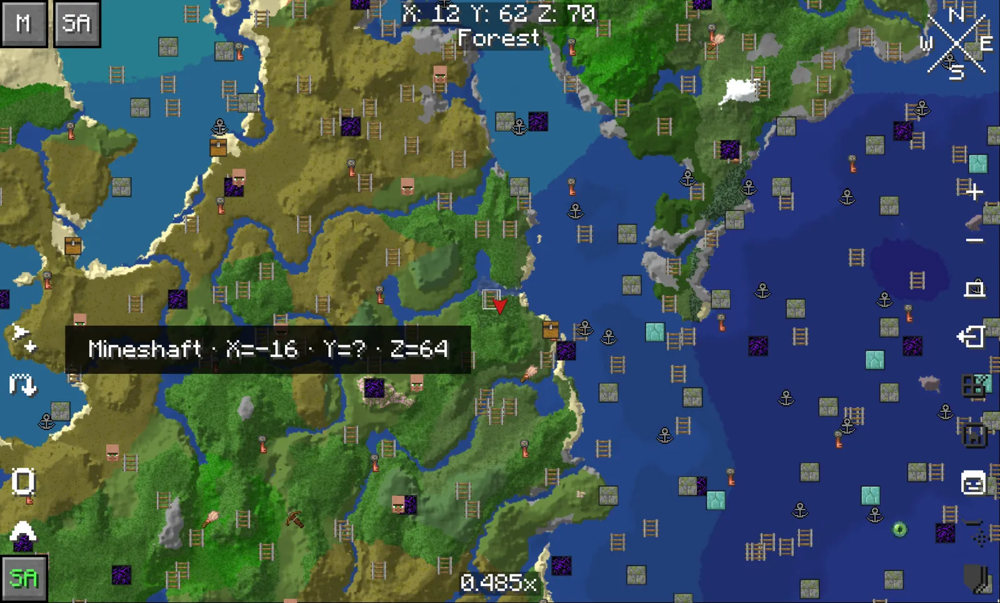
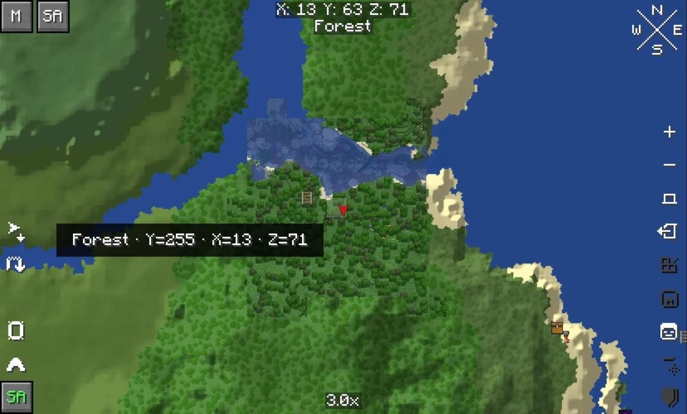
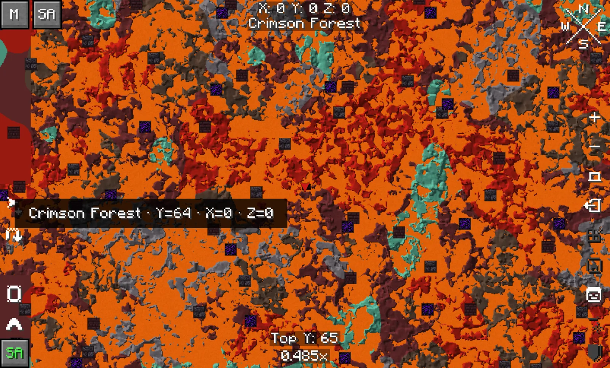
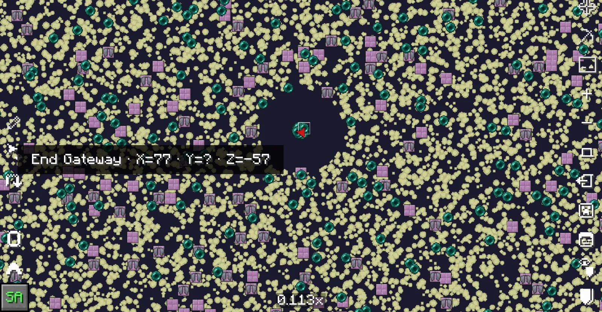

Minecraft 1.21.1 on NeoForge
Your seed, mapped before you get there.
Seed Atlas fills Xaero's World Map with the biomes, terrain and structures your world seed will generate.

Explored and predicted, on one map.
Where you have been, Xaero draws what it saw. Everywhere else, Seed Atlas draws what the seed will generate, in the same style, so the two meet without a seam.

The Nether and the End too.


Structures it can mark
Plus temples, outposts, ore veins and more. Pick which ones show, tick them off as you find them, and set their size.
Install
-
Add Xaero's World Map
Install NeoForge 21.1 for Minecraft 1.21.1 and Xaero's World Map 1.47.0 or newer.
-
Drop in the jar
Put the Seed Atlas jar in your
modsfolder. Only players who want the map need it; servers don't. -
Set the seed on servers
Singleplayer worlds are detected automatically. On a server, run
/seedatlas seed <seed>once and it is remembered.
Commands
/seedatlas statusShows the seed, version, layer and engine state.
/seedatlas seed <seed>Sets the seed for this world or server. Text seeds are hashed like vanilla.
/seedatlas dimension-seed <nether|end> <seed>Gives one dimension its own seed.
/seedatlas clear [nether|end]Forgets the seed.
/seedatlas version [auto|<version>]Predicts an older world generation, for worlds made before 1.21.
/seedatlas settingsOpens the settings menu.
Checked against Minecraft itself.
Every build compares the bundled engine with 1.21.1's own world generator on four seeds.
What it can't see
- Only vanilla generation. Structures from mods and datapacks are not shown.
- Markers show where a structure can generate. The game can still fail to place it.
- Terrain shading is a little coarser than on Minecraft 26.x, and Nether caves are not cut out.